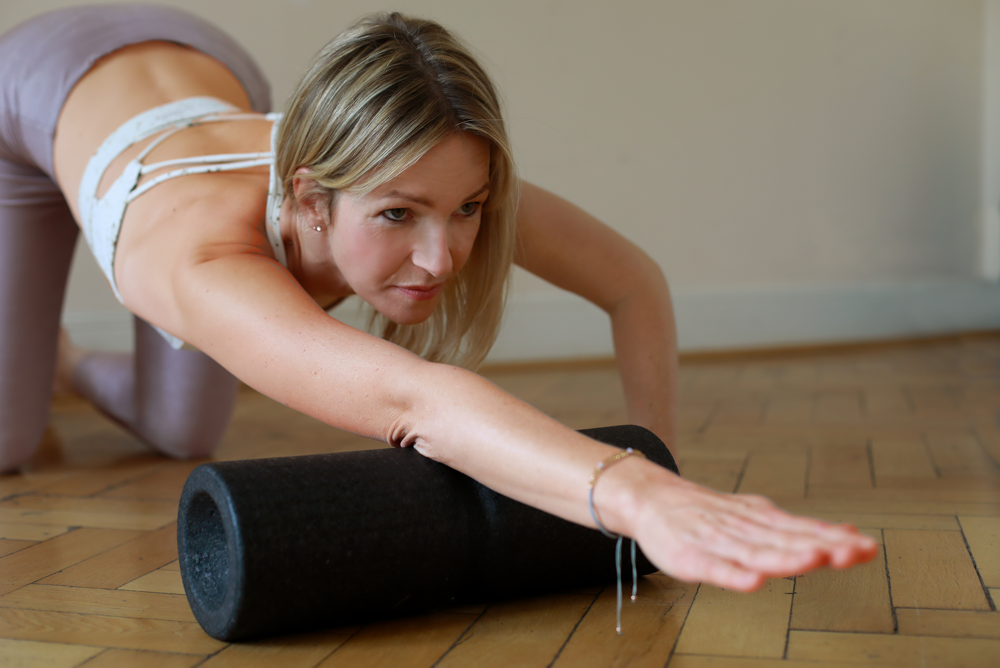

Startseite › Blog
Impulse für
Impulse für
Körper, Geist & Leben
Artikel zu Faszienyoga, Selbstregulation, Nervensystem-Arbeit und bewusstem Leben.

Faszien sind das unsichtbare Netzwerk, das deinen Körper zusammenhält. Wenn sie verkleben, entstehen Schmerzen. Faszienyoga löst genau das – von innen heraus.
Weiterlesen →
Wir lernen früh, zu funktionieren. Aber wer hat uns beigebracht, wie wir wieder runterkommen? Selbstregulation ist die Antwort – und sie lässt sich lernen.
Weiterlesen →
Was wäre, wenn du jeden Morgen mit einer klaren Absicht aufwachst? Ein Manifest ist kein Wunschzettel – es ist ein Versprechen an dich selbst.
Weiterlesen →
Wie viele deiner täglichen Handlungen entstehen aus echtem Wollen – und wie viele aus einem inneren oder äußeren Müssen? Der Unterschied verändert alles.
Weiterlesen →
Du musst kein Kurs besuchen, um von Faszienyoga zu profitieren. Diese fünf Übungen kannst du sofort zu Hause ausprobieren – mit oder ohne Faszienrolle.
Weiterlesen →
Coaching ist kein Luxus – es ist eine Abkürzung zu dir selbst. Wann es sich wirklich lohnt und wann nicht, erkläre ich aus eigener Erfahrung.
Weiterlesen →
15 Überzeugungen über Schmerzfreiheit, Selbstwert und die untrennbare Verbindung von Körper und Geist – mein persönlicher Leitstern.
Weiterlesen →
Statt einer To-Do-Liste: Was ich mir für Q4 2025 wirklich vornehme – berufliche Ziele, persönliche Wünsche und ein Herzensprojekt.
Weiterlesen →Lass uns in einem kostenlosen Gespräch herausfinden, wie ich dich unterstützen kann.
Kostenlose Anfrage